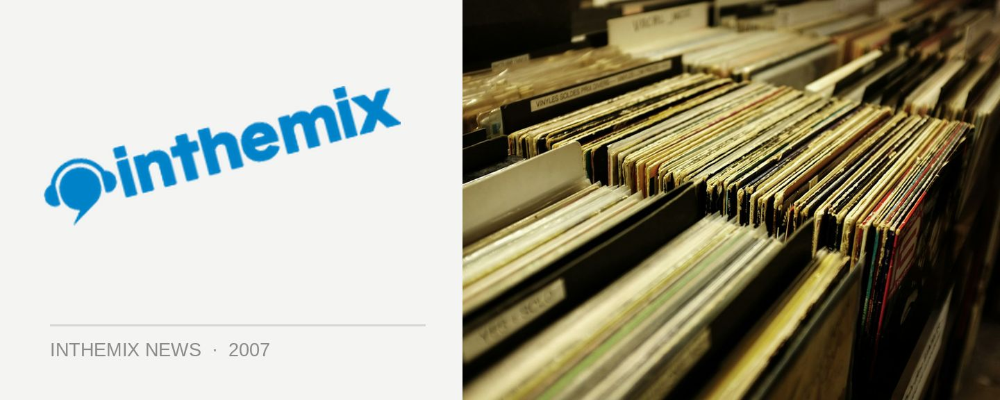

Accolades for Sneaky Sound System at International Songwriting Comp
One of Australia’s most popular dance acts takes home a silver gong for their hit single Pictures as they gear up for a national tour in May. Sneaky Sound System won second prize in the in the Dance/Electronica category at the 2006 International Songwriting Competition, which received nearly 15,000 entries from 88 countries across the world. To give you an idea of how prestigious the event is, some of the judges on the panel included Robert Smith, Peter Hook, Tom Waits, Brian Wilson and Pixies frontman Frank Black.
Pictures has gained its fair share of attention outside of the competition, holding the #1 position on the ARIA Dance charts 13 weeks, reaching number 17 on the ARIA singles chart and getting massive radio play all around the country. Their debut album has so far sold more than 50,000 copies, and their third single UFO will be released on April 28. In support they’ll be touring across the country with their 6 piece band.
In addition to their appearance at the upcoming Smirnoff Experience, Sneaky Sound System will be polaying the following dates across May.Thursday 3rd – Melbourne, The Forum
Saturday 5th – Caloundra, Malibu Sunset Sessions
Sunday 6th – Gold Coast, Platinum
Friday 11th – Sydney, The Forum
Saturday 12th – Maitland, Groovin In The Moo
Thursday 17th – Rouse Hill, The Mean Fiddler
Friday 18th – Canberra, Friction
Saturday 19th – Adelaide, The Dom Polski Centre
Friday 25th – Brisbane, The Met
Saturday 26th – Traralgon, Inferno